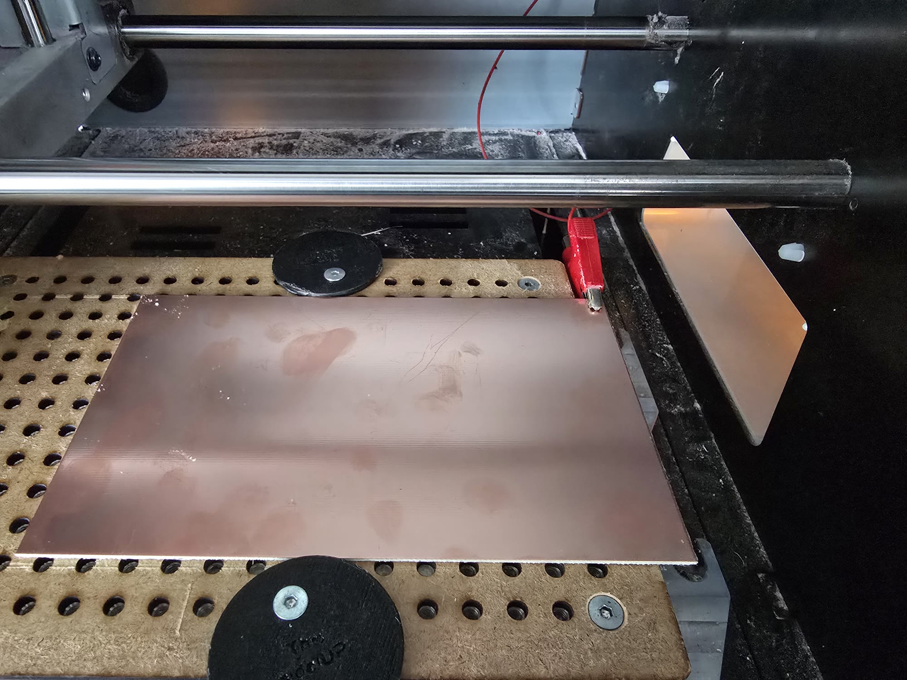
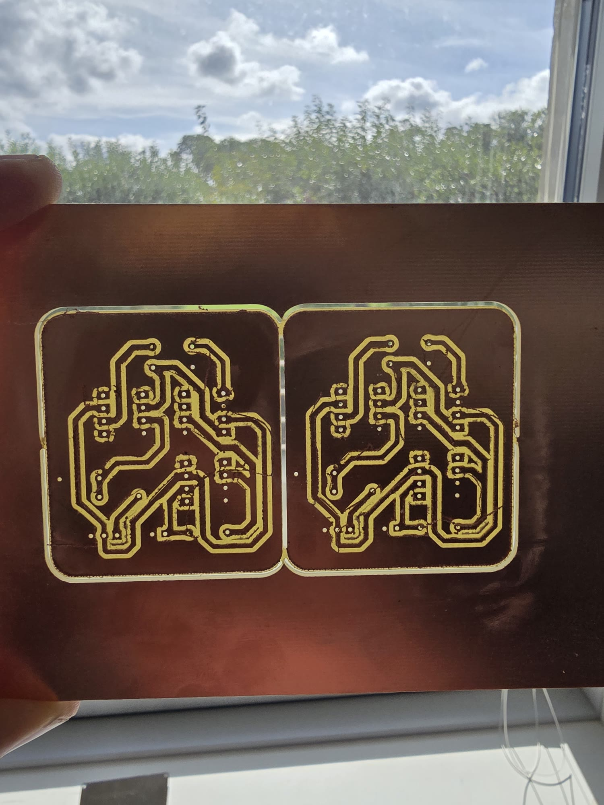
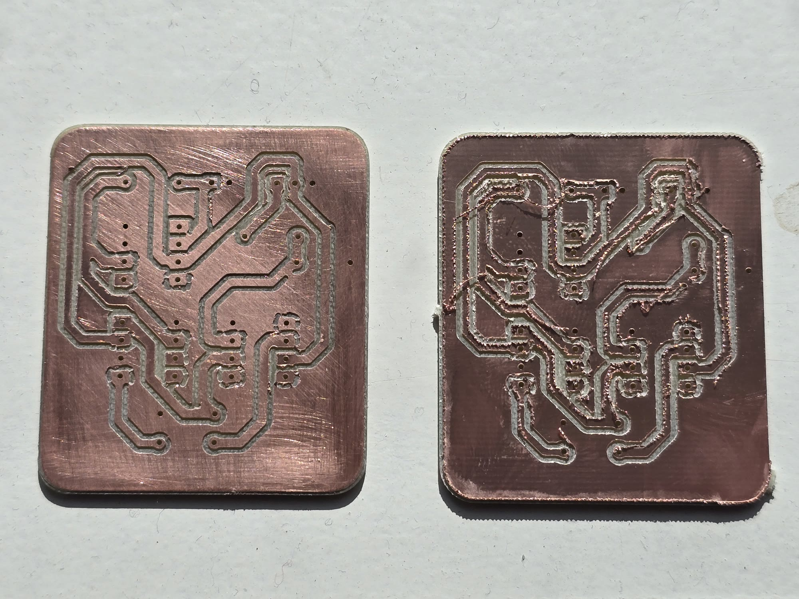
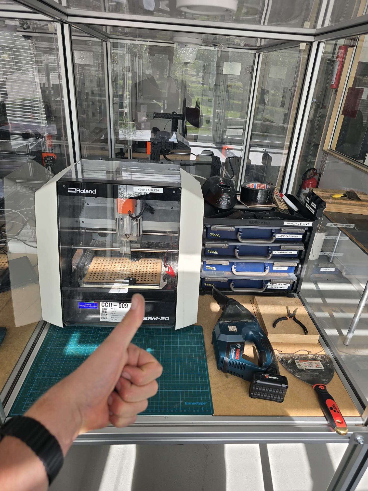
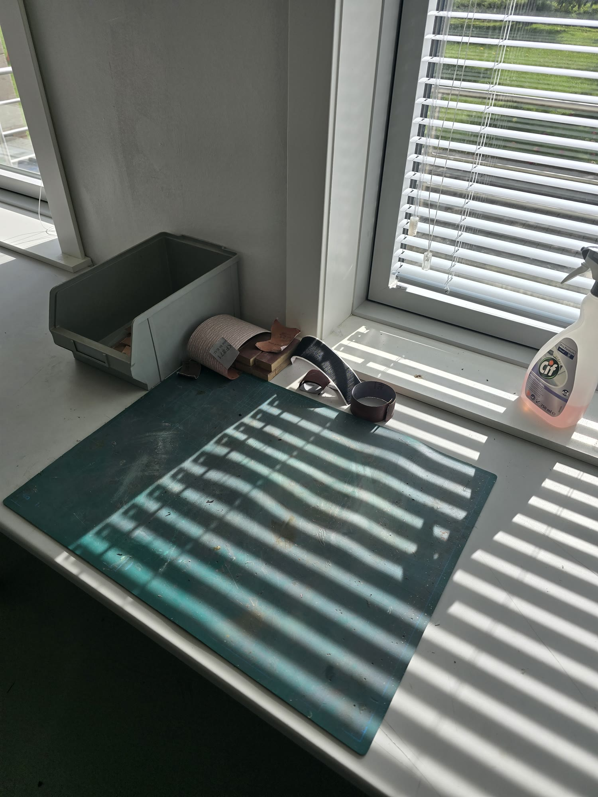
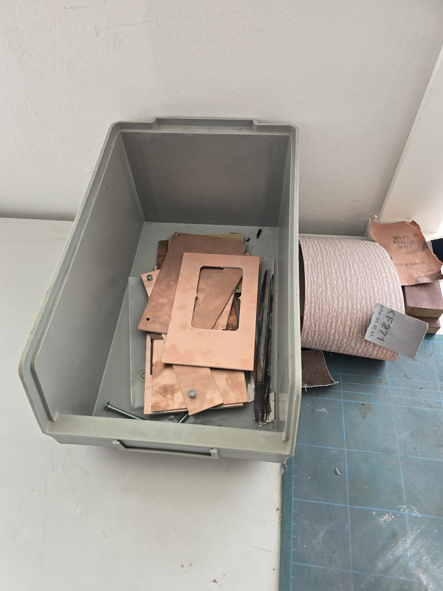

Milling a board
A single-sided board on the Roland SRM-20, start to finish, in the order the job happens at the mill: from KiCad to a board that is ready to solder. The drawings are live: press the buttons and drag the sliders.
What you need
- Your board, drawn in KiCad, routed on the bottom copper.
- SRM-CAM, on the PC next to the mill.
- Roland's VPanel, which sends the files to the machine.
- A 0.8 mm flat end mill in the spindle.
- For zeroing and bed levelling, the probe link: a small Arduino in the machine, and a clip on the copper. See Hardware.
1 · Export from KiCad
- Stay inside the build area SRM-CAM's KiCad plugin draws the SRM-20's travel on the canvas: the whole build area, and the biggest board it recommends. Keep your board inside both. Install it from SRM-CAM:
- Clearance at least the bit : clearance at least 0.8 mm, the width of the bit. Closer than that, two nets cannot be separated (see the check).
- Plot the Gerbers : B.Cu and Edge.Cuts, into one folder. If KiCad asks to refill the zones, say yes.
- Drill files : Excellon, millimetres, into the same folder. That folder is all SRM-CAM needs.
2 · Set up the job in SRM-CAM
Load the Gerber folder
(Ctrl+O) and pick the folder you plotted. The board lands on the bed, and the rail on the left becomes the plan: dry run, traces, drill and cut-out. The red banner is the worst thing the checks found; more on that below.
Tell it about the copper

Clamp the copper sheet to the spoilboard. On , type the board thickness, measured with calipers, then the sheet's width and height (here 150 × 100 mm). Held down by says how the sheet is fixed; this one is clamped at points. More on Holding the copper.
Connect and jog
Plug in the probe link and press Connect. The bar at the bottom now shows where the head is, and whether the bit is touching the copper. Turn on Click to jog and click near the copper's front-left corner: the head lifts and travels there.
3 · Zero and level, at the machine
Zero Z, and only Z
Mind the Z travel
Whenever you fit a bit, check how far down the head has to go. The mill's Z ends at −55 mm in machine coordinates. Touch the copper near that, and the drill and the cut-out keep hitting the limit and stopping, again and again, and the job takes far longer.
Zero Z on the copper
- Probe on, spindle offClip the probe onto the copper and open VPanel. Send Z to the old origin to get close, lift 5 mm, and jog X and Y over the front-left corner.
- G54, not Machine or UserVPanel's coordinate list has Machine, User and G54. The files are NC code and obey G54, so that is the one you set. Setting the origin under Machine or User does nothing for the job.
- Creep downLower Z again, set the cursor step to ×10 (0.1 mm per press), and lower one press at a time, watching SRM-CAM's touch indicator. When it turns red and says Touch, the bit is on the copper; SRM-CAM refuses to jog further down while it does.
- Set Origin Point › ZZero is now the copper surface. Leave X and Y alone.
Find the copper corner
With the bit touching, step towards the front edge: ×100 is 1 mm per press. When the touch goes out, step back one, switch to ×10, and creep up to the edge again until the touch goes out; step back one. Do the same in X. The last points that still touch, in Y and in X, are the corner. Back in SRM-CAM, reads the machine's X and Y, and the sheet on the stage moves to where the copper really is.
Two boards on one sheet
If there's room, (Ctrl+Shift+O) and pick the same folder: a second copy lands beside the first. Then . Touching boards share one cut, and each loses just 0.4 mm along that edge. More on Several boards on one sheet.
Why level the bed
The copper foil is only 35 µm thick, and the cut goes 150 µm deep. A clamped sheet bows by almost that much. Without levelling, part of the board is cut too shallow, and those traces stay shorted. So measure the surface, and let every cut follow it.
Level the bed
- Build the gridSelect on the rail. Pick a grid, 3 × 3 to start, and press Build the grid over the board.
- Point 1 is the datumJog the bit over the first marked probe point. Every height in the map is measured from it, so this is also where you set your final Z zero (on G54, as above).
- Probe over the linkLift a couple of millimetres, then press Probe over the link. SRM-CAM drives the head to each point and touches down twice, to be sure; the table fills as it goes. STOP or Esc stops it at any time.
- The warp switches onA finished probe switches on Warp the exported cut to this surface, so every cutting depth follows the map. The sheet in the recording varied by 0.13 mm.
4 · Check and export
Check every step
Before exporting, select Isolation traces on the rail: SRM-CAM marks every problem on the stage. Red marks are spots where two nets sit closer than the 0.8 mm bit can pass. They stay shorted, whatever the depth. The proper fix is more clearance in KiCad.
If you can't change the design: , then and tick Cut gaps too narrow for the bit. The cutter goes through anyway, trimming a little off the pads.
Export the job
Export the job (Ctrl+E) and pick a folder: SRM-CAM writes every file in the plan, and the run sheet shows each step with its bit, depth and time. The one rule stands: zero Z once, and never re-zero X and Y. A worn bit? Fit a fresh one, check the Z travel again, and zero Z again.
5 · Cut in VPanel
Run order
- Dry runSpindle off, bit 5 mm up, tracing the outline, so you can see the job is on the copper.
- Drill and tracesEither order works, but we prefer the drill first.
- Cut-out, always lastIt frees the boards.
Send the files
In VPanel, press Cut, then Add, and pick the files from the export folder. Now look at the job list. VPanel lists the files alphabetically, so the cut-out lands first, and it runs the list from the top. Move the cut-out down with the arrows: the list must start with the drill or the traces, never the cut-out, and we prefer the drill first. Then press Output.
Watch it cut
With the link connected, SRM-CAM draws where the head actually is, so you can follow the job on screen. The traces take about eighteen minutes for two boards. Keep the cover closed while the spindle runs.
Finish the board
Before the cut-out, vacuum the chips and look at the traces: every channel should be clean and continuous. After the cut-out, hold the sheet up to the light, and you should see every channel.


Snap the tabs and sand the board. Then inspect it for loose hairs or strands of copper the mill didn't clear, and check with a multimeter: continuity where you want it, and none where you don't.
Leave it as you found it
Vacuum the chips, close the cover, clear the bench, and put your offcuts in the scrap box. The people who use this mill are the only ones who maintain it; DesignBuildLab doesn't. A clean, tidy area is how we keep being able to use it.



Reach out to Mads Rudolph, or to the TAs of the course, if you need guidance with the milling. And two minutes of feedback on what was unclear, while it is fresh, is what changes this page for the next student.